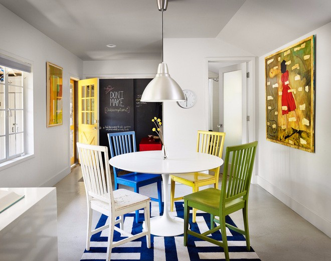

Що таке колір для людини
Колір — це не просто візуальна характеристика предметів, а потужний інструмент впливу на наш емоційний та фізичний стан. Для кожного з нас певні відтінки асоціюються з конкретними відчуттями: одні заспокоюють і допомагають зосередитися, інші — додають енергії або, навпаки, можуть викликати дискомфорт. Розуміння природи кольору дозволяє свідомо керувати настроєм у приміщенні та створювати атмосферу, яка відповідає вашим потребам.

Більше, ніж просто простір
Інтер'єр — це не лише розстановка меблів чи поєднання матеріалів. Це середовище, у якому ми проводимо більшу частину свого життя. Кожен елемент нашого дому чи офісу щодня впливає на наше самопочуття, продуктивність та якість відпочинку. Оскільки інтер'єр є фоном для всіх наших справ, важливо організувати його так, щоб він не просто був функціональним, а й підтримував наш внутрішній баланс.

|
|